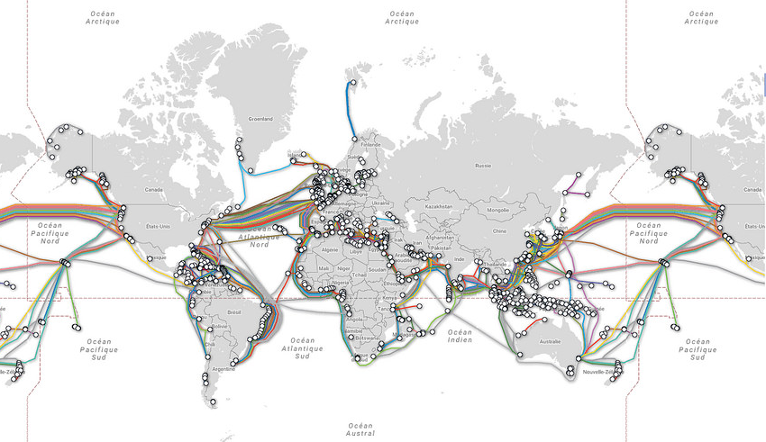

Internet est devenu le moyen de communication principal entre les hommes et avec les machines. Internet est le réseau informatique mondial accessible au public. Ce réseau est constitué de millions d'ordinateurs connectés entre eux. Les connexions entre les ordinateurs sont faites de câbles en cuivre ou en fibre optique, et de liaisons radio sans fil ou par satellite. Le but d'internet est de déplacer des informations numériques (appelées données) d'un endroit à un autre. Internet fonctionne un peu comme un service postal. Le protocole utilisé pour transférer les données sur le réseau internet est le protocole TCP/IP. Il s'agit en fait de deux protocoles : le protocole IP (Internet Protocol) qui découpe les données à envoyer en paquets et le protocole TCP (Transmission Control Protocol) qui permet de fiabiliser la transmissions des données.
Internet (INTER NETwork) est le réseau informatique mondial. Il est constitué de millions de sous réseaux connectés entre eux. Tous ces réseaux permettent de connecter des millions de machines (ordinateurs, tablettes, téléphones mobiles, ...) entre elles.
Un email est un courier électronique (courriel). C'est un message écrit envoyé électroniquement via un réseau informatique. On appelle messagerie électronique l'ensemble du système qui permet la transmission des courriers électroniques.
Un protocole informatique est un ensemble de règles et de normes qui régissent les échanges de données numériques ou les comportements de chaque machine d'un réseau.
Le RAR (Recommandé avec Accusé de Réception) est un protocole pour le courier postal. Les règles sont les suivantes :
Une adresse IP est un numéro d'identification qui est attribué de façon permanente ou provisoire à chaque machine reliée à un réseau informatique qui utilise le protocole IP. Une adresse IP se présente en général sous la forme de quatres nombres entiers compris entre 0 et 225 séparés par des points. (exemple d'adresse IP : 172.203.16.81).
Un paquet est l'unité de données informatiques pour les réseaux. Par exemple quand on veut envoyer un fichier numérique, on va le découper en paquets. Chaque paquet contient une partie du fichier numérique mais aussi des informations suplémentaires comme l'adresse IP du destinataire pour savoir où envoyer ce paquet.
Un routeur est une machine informatique assurant le routage des paquets. Son rôle est de faire transiter des paquets d'une interface réseau vers une autre, au mieux, selon un ensemble de règles, appelé protocole.
Un réseau local ou LAN en anglais (Local Area Network) est un sous-réseau. Un LAN contient un certain nombre de machines connectées et il est lui même connecté avec d'autres sous-réseau via le réseau internet.
Création d'ArpaNet (Advanced Research Project Agency NETwork) le premier réseau internet aux Etats-Unis.
Création des mails électroniques (emails).
Création du protocole TCP/IP.
Naissance du DNS (Domain Name System) qui permet d'attribuer des noms de domaine aux ordinateurs connectés à internet.
La 4G généralise l'accès à l'Internet mobile en France.